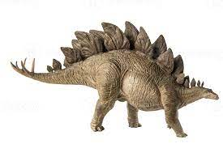
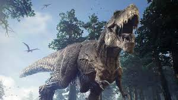
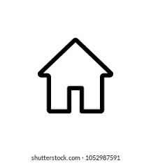
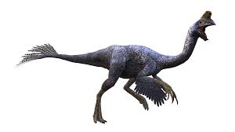
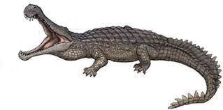
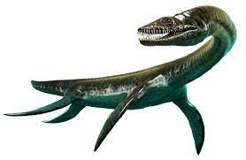

stegosaurus (gr. "lagarto con tejado" o "lagarto cubierto") es un género con 3, probablemente 4, especies conocidas de dinosaurios tireóforos estegosáuridos, que vivieron a finales del período Jurásico, hace aproximadamente 156 y 144 millones de años, entre el Kimmeridgiense y el Titoniense, en lo que hoy es América del Norte y posiblemente Europa. Coloquialmente en español llamado estegosaurio. Debido a sus distintivas espinas de la cola y placas, stegosaurus es uno de los más reconocidos dinosaurios. Al menos tres especies han sido identificadas en la porción superior de la Formación Morrison, del oeste de Estados Unidos, y se han encontrado restos de por lo menos 80 individuos. En 2006, se descubrió un espécimen de stegosaurus en Portugal, lo que indica que este animal también estaba presente en Europa.3 De las especies que se han clasificado en la Formación Morrison superior del oeste de los EE. UU., solo tres son universalmente reconocidas, stegosaurus stenops, stegosaurus ungulatus y stegosaurus sulcatus, con una cuarta stegosaurus armatus siendo dudosa. Se han encontrado restos de más de 80 individuos de este género. stegosaurus habría vivido junto a dinosaurios como Apatosaurus, Diplodocus , Brachiosaurus , Ceratosaurus, Allosaurus y Torvosaurus, siendo estos últimos sus posibles predadores.
Siendo un gran herbívoro cuadrúpedo, pesadamente constituido, stegosaurus tenía una distintiva e inusual postura, con un lomo fuertemente arqueado, los miembros anteriores cortos, la cabeza cerca del suelo y la cola rígida sostenida en el aire. Debido a su combinación distintiva de placas anchas y verticales y cola con puntas en la punta, stegosaurus es uno de los tipos de dinosaurios más reconocibles. Su arsenal de placas y de púas ha sido el tema de muchas conjeturas. Las espinas fueron utilizadas muy probablemente para la defensa, mientras que las placas también se han propuesto como mecanismo defensivo, y como parte de la exhibición y de las funciones de termorregulación. stegosaurus tenía una proporción de masa cerebral a cuerpo relativamente baja. Tenía un cuello corto y una cabeza pequeña, lo que significa que probablemente comía arbustos y plantas bajos. Una de sus especies, stegosaurus ungulatus, fue uno de los más grandes estegosaurianos, más grande que Kentrosaurus y que Huayangosaurus y aunque aproximadamente del tamaño de un autobús, compartía muchas características anatómicas, incluyendo a las espinas y las placas traseras, con los otros géneros estegosaurianos.
Los restos de stegosaurus fueron identificados por primera vez durante las "Guerras de los Huesos" por Othniel Charles Marsh en el Monumento Nacional Dinosaur Ridge. Los primeros esqueletos conocidos eran fragmentarios y los huesos estaban dispersos, y pasarían muchos años antes de que se entendiera bien la verdadera apariencia de estos animales, incluida su postura y la disposición de las placas. A pesar de su popularidad en libros y películas, los esqueletos montados de stegosaurus no se convirtieron en un elemento básico de los principales museos de historia natural hasta mediados del siglo xx, y muchos museos han tenido que ensamblar exhibiciones compuestas de varios especímenes diferentes debido a la falta de esqueletos completos. stegosaurus es uno de los dinosaurios más conocidos y ha aparecido en películas, sellos postales y muchos otros tipos de medios.
El cuadrúpedo stegosaurus es uno de los dinosaurios más fácilmente identificables, debido a la doble fila distintiva de las placas romboidales que se elevan verticalmente a lo largo de su arqueado lomo y a los dos pares de púas largas que se extienden horizontalmente cerca del extremo de la cola. Aunque los individuos grandes, YPM Coll, podían crecer hasta 9 metros de largo y de 4 metros de alto y entre 5,3 y 7 toneladas métricas de masa corporal, Aunque fue un animal grande, quedaba empequeñecido por sus contemporáneos saurópodos gigantes como Diplodocus, Camarasaurus y Apatosaurus. En 2016, Gregory S. Paul presentó una estimación más baja de 6,5 metros de longitud y 3,5 toneladas métricas de masa corporal para S. stenops, y 7 metros de longitud y 3,8 toneladas de masa corporal para S. ungulatus. Por lo que cierta forma de armadura parece haber sido necesaria, ya que coexistió con dinosaurios terópodos cazadores grandes, tales como los temibles Allosaurus, Ceratosaurus, Saurophaganax y Torvosaurus. La mayor parte de la información conocida sobre stegosaurus viene de restos de animales maduros, si bien se han encontrado recientemente restos de ejemplares juveniles. Un espécimen subadulto descubierto en 1994 en Wyoming mide 4,6 metros de largo y 2 metros de alto, y se considera que pesaría en vida 2,3 toneladas. Está expuesto en el museo geológico de la Universidad de Wyoming. El esqueleto más pequeño conocido mide 210 centímetros de largo y 80 centímetros de alto hasta el lomo y se exhibe en el Museo de Naturaleza y Ciencia de Denver.
Las patas traseras tenían tres dedos cortos, mientras que cada pata delantera tenía cinco dedos; solamente los dos dedos internos tenían forma de casco. La fórmula falángica es 2-2-2-2-1, lo cual significa que el dedo más interior de la extremidad anterior tiene dos huesos, el siguiente tiene dos, etc. Los cuatro miembros se apoyaban en almohadillas situadas detrás de los dedos de la pata. Los miembros delanteros eran mucho más cortos que los rechonchos miembros traseros, que le conferían una postura inusual. La cola parece haber sido sostenida bien lejos de la tierra, mientras que la cabeza de tenía una posición cerca al suelo, probablemente a no más de 1 metro del suelo.
| DINOSAURIOS | ||
|  |
 |
 |
|  |
|
 |